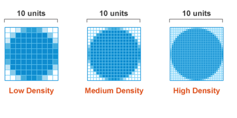

Отзывчивость в CSS
Веб — это платформа, обеспечивающая простой обмен информацией через Интернет, независимо от того, на каком устройстве эта информация просматривается. В то время как различия между компьютерами, выходящими в Интернет, состояли главным образом в разных разрешениях экрана, быстрый рост мобильных устройств изменил требования: важно, чтобы сайт также был доступен на мобильнике.
Какие варианты есть для работы с мобильными устройствами?
- Ничего не делать и позволить мобильным пользователям увеличить масштаб, чтобы прочитать веб-сайт.
- Создать второй сайт, вроде m.facebook.com, и перенаправить мобильные устройства на него.
- Использовать отзывчивый веб-дизайн.
Устройство, браузер, область просмотра
Прежде чем идти дальше, нам необходимо определить некоторые термины.
Устройство
Используемые аппаратные средства: смартфон, планшет, компьютер или ноутбук.
Браузер
Программное обеспечение: Firefox, Google Chrome, Safari, Internet Explorer.
Область просмотра
Область в браузере, которая фактически отображает веб-страницу.

Отзывчивый веб-дизайн
Идея отзывчивого веб-дизайна состоит в том, чтобы ваш сайт адаптировался к любому устройству. Это делается путём нацеливания на устройства с помощью CSS и применением определённых стилей только к этим устройствам.
Отзывчивость зависит от свойств устройства или области просмотра. К примеру:
- какая ширина области просмотра?
- какая высота области просмотра?
- как область просмотра ориентирована?
- какое у устройства разрешение?
В зависимости от ответа на эти вопросы, отзывчивый CSS будет применять разные или дополнительные правила CSS.
До сих пор каждая часть нашего CSS использовалась каждым устройством, получившим доступ к нашей веб-странице. Отзывчивый веб-дизайн позволяет применить определённые стили в определённых случаях.
Медиа-запросы
Нам нужно написать блоки в нашем CSS, которые будут использованы на устройствах, соответствующим критериям этого блока. Такие блоки называются медиа-запросами.
Синтаксис медиа-запросов напоминает синтаксис ключевых кадров анимации, так как он определяет блок внутри CSS, в котором вы пишете дополнительные правила CSS и они применяются только в определённых случаях.
/* Эта часть читается каждым устройством */
body { font-size: 14px; }
@media (min-width: 1200px) {
/* Эта часть читается только там, где ширина области просмотра больше,
чем 1200 пикселей */
body { font-size: 16px; }
}Здесь размер текста по умолчанию установлен как 14px. Но чтобы приспособиться к большим областям просмотра размер текста задан как 16px, если область просмотра шире, чем 1200 пикселей.
Имейте в виду, что мы говорим об области просмотра, а не устройстве. На мобильнике, когда браузеры запускаются в полноэкранном режиме, эти две ширины являются заменяемыми. Если вы работаете на компьютере, измените размер окна браузера, чтобы увидеть как медиа-запросы активируются или наоборот.
Несколько параметров
Вам может потребоваться два условия для активации медиа-запроса.
body { font-size: 18px; }
@media (min-width: 1000px) and (orientation: landscape) {
body { font-size: 20px; }
}Размер шрифта будет установлен как 20px, если область просмотра содержит по меньшей мере 1000 пикселей в ширину и находится в ландшафтном режиме (как противоположность портретного режима).
Вы можете также использовать not и only. Они называются логическими операторами.
Несколько правил CSS
Вы можете включить в медиа-запросы столько правил CSS, сколько захотите.
body { font-size: 14px; }
.button { display: block; }
.title { text-align: center; }
@media (min-width: 1200px) {
body { font-size: 16px; }
.container { margin: 0 auto; width: 960px; }
.button { display: inline-block; }
.title { text-align: left; }
}Параметры
Медиа-запросы требуют параметры, действующие как условия, которые должны быть заполнены, чтобы активировать медиа-запрос. Написав @media (min-width: 1200px) мы говорим браузеру прочитать этот блок, только если область просмотра шире 1200px.
width
Параметр width — один из широко используемых в отзывчивом веб-дизайне. Это происходит от того, что веб-страницы читаются по вертикали: мы прокручиваем их, чтобы прочитать скрытое содержимое. Как результат, ширина фиксирована и ограничена, в то время как высота сайта является переменной.
Поскольку мы обычно не прокручиваем по горизонтали, то должны уместить наш дизайн в доступную ширину области просмотра. Медиа-запросы позволяют выполнять проверку на эту ширину и применить определённые стили, если область просмотра шире чем (min-width) или уже чем (max-width) заданное число пикселей.
Вы можете использовать:
- min-width(960px): стили будут применяться только тогда, когда область просмотра шире 960px;
- max-width(768px): стили будут применяться только тогда, когда область просмотра уже 768px.
Эти параметры принимают px, em и rem.
Каждый раз, когда вы изменяете размер области просмотра, браузер проверяет CSS для медиа-запросов, которые включают в себя параметры width, и применяет соответствующие стили.
height
Параметр height работает подобно width, за исключением того, что он проверяет высоту области просмотра. Вы можете использовать min-height и max-height. Этот параметр редко используется, так как сайты в основном прокручиваются по вертикали и редко когда возникает необходимость адаптировать их дизайн к невысокой области просмотра.
orientation
Параметр orientation может быть определён, если область просмотра находится в одном из следующих режимов:
- landscape (ландшафт): область просмотра шире высоты;
- portrait (портрет): область просмотра выше ширины.
@media (orientation: portrait) {
/* Для вертикальной ориентации */
}
@media (orientation: landscape) {
/* Для горизонтальной ориентации */
}Хотя этот параметр в основном используется для планшетов и смартфонов, имейте в виду, что даже на широкоэкранном мониторе область просмотра может быть в портретном режиме, если её ширина меньше высоты.
На мобильном устройстве, даже если вы держите устройство в портретном режиме, при появлении клавиатуры окно просмотра может рассматриваться как ландшафт, учитывая, что высота становится меньше, чем его ширина.
resolution
Параметр resolution имеет отношение к плотности пикселей устройства и может быть выражен как dpi (dots per inch, точек на дюйм), либо как dpcm (dots per centimeter, точек на сантиметр). Это зависит от:
- разрешения (например, 1440x900, 1280x800, 1024x768 и др.);
- диагонали экрана (например, 11.6", 14", 21" и др.).
Плотность пикселей в основном говорит, насколько чёткий ваш дисплей (чем выше разрешение, тем чётче дисплей).
@media (min-resolution: 300dpi) {
/* Для устройств высокой плотности */
}Экраны настольных компьютеров обычно обладают плотностью пикселей около 100 dpi. Смартфоны с другой стороны, имеют невероятный диапазон dpi. Например:
- Nokia Lumia 640: 332dpi
- Apple iPhone 6+: 401dpi
- Google Nexus 5: 445dpi
- HTC One: 469dpi
- Samsung Galaxy S6: 577dpi
Какую роль здесь играют стили? Ну, экраны с высоким разрешением отображают текст очень чётко: отдельные пиксели становятся едва заметны, а буквы выглядят абсолютно гладкими.
К примеру, проблема с изображениями на дисплеях Retina. Это длинная тема, так что читайте эту статью на Sitepoint — CSS Techniques for Retina Displays.

Источник: sitepoint.com
В данном случае стиль должен обеспечить фоновое изображение по умолчанию для каждого устройства и применять фоновое изображение высокого разрешения на дисплеях Retina.
/* Логотип 40x40 */
.logo {
background-image: url(marksheet-logo.png);
background-size: 40px 40px;
}
@media (min-resolution: 300dpi) {
/* Логотип 80x80, уменьшенный до 40x40 */
.logo { background-image: url(marksheet-logo@2x.png); }
}Имейте в виду, что должен быть задан размер фона. В противном случае изображение @2x для Retina займёт вдвое больше места.
Суффикс @2x — это просто обозначение от Apple для изображений Retina и был принят де-факто в качестве записи по умолчанию в CSS.
Сначала мобильные или сначала настольные
Как правило, сперва вы хотите сосредоточиться на полноценной настольной версии, так как она содержит более сложный дизайн, который включает в себя колонки, эффекты при наведении, абсолютное позиционирование, обтекание и др.
Но разработка сначала мобильной версии на самом деле проще, поскольку «HTML почти на 100% отзывчив из коробки». Большинство веб-дизайнов на мобильнике сосредотачивается только на вертикальной компоновке, с малым числом колонок или вообще без них, поскольку прокрутка на мобильных устройствах естественна.
Использование потока в дизайне мобильного сайта примитивно: просто укажите ваши элементы HTML так, как вы хотите чтобы они отображались. Всего лишь написав код HTML, вы уже делаете дизайн своего мобильного сайта. Сперва «шапка», после этого меню, затем ваше содержимое и в конце «подвал». Вуаля!
CSS для мобильников будет использовать min-width в медиа-запросах, чтобы применить определённые правила для больших экранов:
/* Общие правила CSS для всех экранов, включая смартфоны */
body { }
.title { }
.button { }
@media (min-width: 768px) {
/* Правила для планшетов и больших экранов */
}
@media (min-width: 992px) {
/* Правила для ноутбуков и компьютеров */
}
@media (min-width: 1200px) {
/* Правила только для больших экранов */
}Подход «сначала настольные» начинается со стилей для больших экранов и min-width в медиа-запросах, чтобы применить конкретные правила для больших областей просмотра.
/* Общие правила CSS для всех экранов, включая большие настольные экраны */
body { }
.title { }
.button { }
@media (max-width: 1199px) {
/* Правила для ноутбуков и небольших экранов */
}
@media (max-width: 991px) {
/* Правила для планшетов и небольших экранов */
}
@media (max-width: 767px) {
/* Правила только для смартфонов */
}Обратите внимание, что в случае «сначала настольные» значения min-width на единицу меньше, чем значения max-width в подходе «сначала мобильные». Например:
- @media (min-width: 768px) нацелено на планшеты;
- @media (max-width: 767px) нацелено не на планшеты.

Все материалы сайта доступны по лицензии Creative Commons «Attribution-NonCommercial» («Атрибуция — Некоммерческое использование») 4.0 Всемирная, если не указано иное.